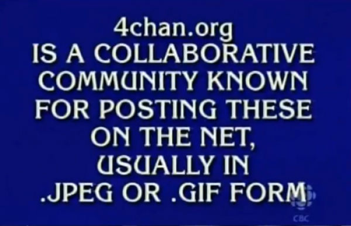
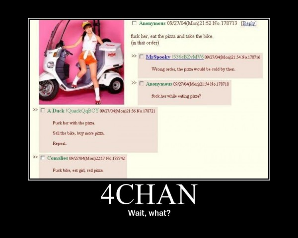
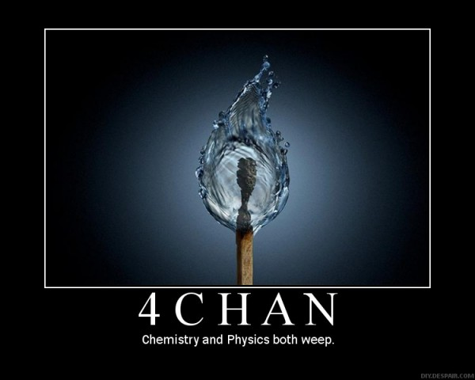

-
Where the Masses Art: 4chan, Politics and the Electronic Id
by Greg Afinogenov October 19, 2010
Intellectuals today are, as usual, in a state of crisis. Nobody wants them in Washington; nobody wants them for a revolutionary vanguard; nobody wants them as benevolent cultural arbiters. Even the humanities departments that form their most reliable refuge are under perpetual threat of budgetary annihilation and bureaucratic meddling. Worse yet, many of their problems are traceable to the cultural reverberations of new technologies—the very sphere in which they should be ahead of the crowd. The reading and writing practices that have evolved on the Internet give less and less recognition to the esoteric scribblings of the scholarly virtuoso. For-profit colleges, with their long-distance classrooms, have little time for bell hooks and Bourdieu. E-books are hard to show off on a shelf.
This litany of tribulations is capped off by one central problem: the electronic cultural landscape of the early 21st century is a uniquely dispiriting place for intellectuals. This new world makes it difficult or impossible for them to flex their muscles as critics or to draw on the theoretical legacies that have fueled their conversations for decades. Internet-inflected resuscitations of Marx, Debord, and the Frankfurt School fail again and again to gain purchase on the field of activity they are supposed to explain. After all, the field is dominated not by struggling subjects or political mystifications, but corporations and their enthusiastic consumers. The discovery that the capitalist world is a show or a simulacrum has, in this context, lost all its pathos. It’s hard to find a victim in all this gleeful celebration of marketing. The cranky-cultural-critic pose of an Adorno has proven to be a refuge for many intellectuals who have confronted this dilemma, but it is not sustainable for long: moralism has, almost by definition, a limited shelf life, and it is especially difficult to keep up when one is increasingly obligated to maintain a lively presence in the spaces administered by Facebook and Google. “When the service is free, you are the product” may end up being one of the most significant maxims of our time.
While corporate dot-coms like Twitter and the Gawker network have been responsible for many of the loudest Internet phenomena of recent Internet history, there is one site that has outdone all of them: 4chan. Founded in 2003 by then-15 year old Christopher Poole (known everywhere as “moot”), it was originally an imitation of a Japanese anime forum, but has since transformed into something much larger and more anarchic. Naturally, 4chan has not only not gone public, it has apparently resisted any attempt to make it into a business at all (although it does support an enormous ecosystem of sites that do everything from archiving its contents to selling Japanese sex toys to its nerdy teenage audience). The site’s userbase is almost entirely anonymous—but for its IP addresses, which 4chan’s founder admitted to keeping at a Congressional hearing—and constantly shifting. Threads, by site policy, are deleted permanently after a few minutes of inactivity; this means the site has no official archive or memory, unlike the rest of the Internet, which usually retains data forever. The place is moderated, but the admins restrict themselves to removing child porn and overt terrorist threats rather than, as with most other sites, hate speech and other outré comments. The result is a massive cesspool that has come to epitomize the electronic id.
Naturally, 4chan would hardly be noteworthy if it were not also an enormous engine of creativity. In fact, it has gradually become enthroned, in media discourse as well as popular legend, as the fount and arbiter of everything that is unique to Internet culture. (The moment when Rick Astley burst out of a float at the 2008 Macy’s Thanksgiving Day Parade may be considered a watershed in this process.) Even memes that actually originated elsewhere, like LOLcats, have popularly been ascribed to 4chan, not least in the collective memory of 4chan itself.
For intellectuals, then, the site is a real goldmine. Because it seems to be the true inheritor of the anarchic, populist, anticommercial promise of the Internet, the site can potentially be the hero of a triumphant narrative about organic culture-formation, anti-corporate resistance, and decentralized political action. It helps that 4chan—or “Anonymous,” the moniker its users employ when they engage in mass actions—is fully conscious of this aspect of its power, and uses it to stage actions ranging from the vaguely dadaist (the successful and technologically-sophisticated attempt to hijack the Time 100 poll in 2009) to the explicitly anti-authoritarian (its global, masked protests against the Church of Scientology in 2008). An observer looking to catch the leading edge of the future of activism could hardly be faulted for seeing it here.
And then there’s the dark side. The site’s aesthetic befits its uncontrolled nature. It is unapologetically racist, sexist, and homophobic; its angsty, geeky, and juvenile constituency seems to wear its emotional immaturity as a badge of pride. It’s as if the whole culture of 4chan were designed deliberately to upset liberal academics. Yet the slight frisson of the taboo that one gets while reading it (a hard feeling to avoid even for the most jaded Internet consumers) could be taken by intellectuals, not as grounds for condemnation, but as the ultimate proof of its authenticity. Unlike the comfortable, inoffensive activism on Twitter, which failed so resoundingly to produce change in Iran, 4chan gets things done—even if its merciless vigilante methods ruffle some feathers.
But are all these hopes justifiable? Can we really defend the idea that 4chan represents a new type of anything, much less political activism? There are good reasons to be skeptical. To begin with, the site’s edgy façade is to a large extent a simple put-on. Yes, posters call each other “fags” and throw around “nigger” like it’s 1850—but when questions about gay marriage and economics are put to them directly, they turn out to be a fairly unremarkable cross-section of American society. Gays, women, and black people appear to be represented proportionately, which is what leads to occasional bickering between “gayfags” and “straightfags.” Most importantly, nearly everyone there is young. As other popular websites have begun to approximate the demographic curve of the general population, 4chan has stayed young (although different boards vary in this regard; /b/, the loudest representative of 4chan in the wider world, is associated with high-schoolers, while /r9k/ is home mainly to self-pitying twentysomethings).
Anons, in other words, are not mysterious Hollywood über-hackers able to command computer networks at the touch of a key. In fact, their best-known pranks eschew technical expertise in favor of sheer numbers: the Time prank, though clever, needed only a simple program and a set of rules to be distributed to a horde of twitchy-fingered voters. And, like any movement that relies on the involvement of masses of willing participants, most of their campaigns fail to gather enough steam to make it onto the daily news. The internet harassment and vigilantism Anonymous is best-known for requires only a sufficient degree of malice and mutual encouragement to make an impression. 4chan’s numbers are not simply a major component of its success—together with its amorality (or rather its selective and idiosyncratic brand of morality), they are its central resource.
As for 4chan’s fertility as a source of memes, that, too, is a function of numbers, but the relationship between numbers and success is far from clear-cut. The site is constantly rocked by squabbles over whether it can maintain the originality that made it famous. The central charge is that “newfags” have brought “cancer” in the form of derivative and lazy meme-generating practices; the debate over who qualifies as a “newfag” and what as “cancer” gets predictably bizarre, given that the length of an anon’s tenure on the site can never be determined or substantiated. Looking at the site’s day-to-day activity, it is difficult to tell whether its creative energy really lies in its massive and anarchic structure. Occasional flashes of brilliance are buried and drowned just as quickly as the dreck.
4chan will not save Internet culture from corporatization, even if it wants to do so. Nor will any of the other analogous sites (like the SomethingAwful.com forums, which have existed even longer). But that does not mean it is not a successful phenomenon in its own right, and one with considerable interest to intellectuals. In order to get at what makes it interesting, however, we should put aside any assumptions about its potentially anti-commercial implications. “4chan culture,” if we can call it that, works together with the world of Google and Facebook, not against it.
In particular, 4chan’s success is due not to its anarchic features, but its ability to institutionalize them. Internet culture is characterized by the fluidity of the boundaries between creative consumption and production. By relying on plagiarism, appropriation, and the exploitation of all available Internet resources, 4chan turns the basic habits of Internet consumption—sharing, voting, and other low-investment activities—into tools for productive activity that takes place under the banner of a common creative project. (Admittedly, “creative” can include ordering thousands of pizza deliveries to the house of an unsuspecting victim.) The corporate-driven social networks depend on this kind of production to sustain them, but they have so far failed to produce anything coherent themselves. The network that first learns how to learn from 4chan will likely change the face of the Internet permanently, and there are signs that sites like reddit have already moved in this direction.
In short, 4chan is likely to end up not as the harbinger of a more bottom-up, decentralized Internet but as a testing ground for its further commercialization. This should not be surprising. Like most emerging technologies, the Internet has followed the Leninist blueprint by rapidly transforming from a bazaar dominated by fringe hobbyists and grassroots activists into a controlled marketplace organized around crucial monopolies. This does not mean that the hobbyists and activists have disappeared—quite the opposite, in fact—but rather that they must increasingly operate under the umbrella of corporate networks. Corporations have never been entirely absent from the Internet, even in the 1970s, but its future history will be written more and more about them.
The only way intellectuals can hope to deal with this apparently dystopian future is by accepting it. It remains to be seen whether critique in the Frankfurt School sense can survive such a gesture, but if it is to be viable at all, it can no longer oppose itself to capitalism or the corporatized world without becoming even more irrelevant. What will be left will be a kind of marine biology, the contemplation of the lifecycle of giant corporate squid as they struggle and envelop each other, each tentacle crowded with helpless symbiotes. 4chan is as unlikely to survive in its present form as any coral reef in the oceans of 2050—but its millions of tiny skeletons will have reshaped the Internet landscape for good.